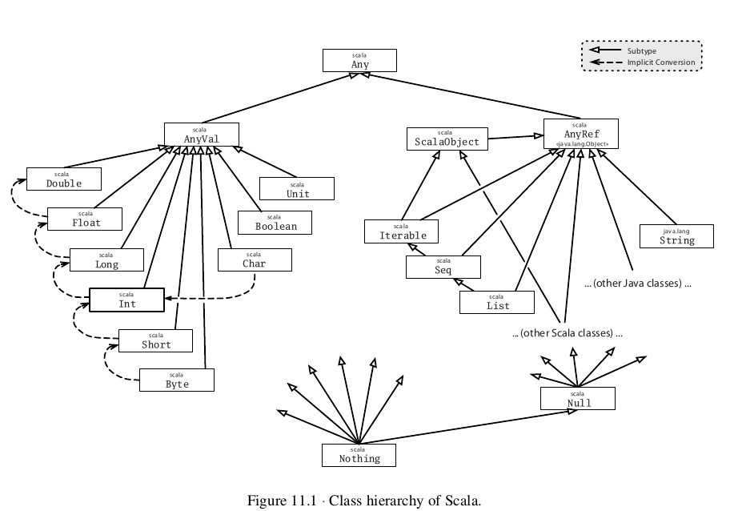
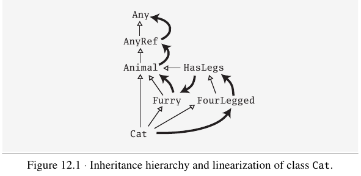

scala
Table of Contents
1 scala
- Programming in Scala
- The Scala Programming Language : http://www.scala-lang.org/
1.1 基础知识
1.1.1 标识符
scala标识符分为3类：
- An alphanumeric identifier starts with a letter or underscore, which can be followed by further letters, digits, or underscores.
- Identifiers in user programs should not contain ‘$’ characters, even though it will compile; if they do this might lead to name clashes with iden- tifiers generated by the Scala compiler. （尽可能避免$）
- Although underscores are legal in identifiers, they are not used that often in Scala programs, in part to be consistent with Java, but also because underscores have many other non-identifier uses in Scala code. As a result, it is best to avoid identifiers like to_string, __init__, or name_ . （尽可能避免_)
- "val name_:Int = 1" 会被认为是定义"name_:"，所以必须在:之前添加空格 NOTE（dirlt）：词法解析足够奇葩
- An operator identifier consists of one or more operator characters. Oper- ator characters are printable ASCII characters such as +, :, ?, ~ or #.
- The Scala compiler will internally “mangle” operator identifiers to turn them into legal Java identifiers with embedded $ characters. For instance, the identifier :-> would be represented internally as $colon$minus$greater. If you ever wanted to access this identifier from Java code, you’d need to use this internal representation.
- A mixed identifier consists of an alphanumeric identifier, which is fol- lowed by an underscore and an operator identifier.
- unary_+ used as a method name defines a unary + operator.
- myvar_= used as method name defines an assignment operator.
- A literal identifier is an arbitrary string enclosed in back ticks (` . . . `). NOTE（dirlt）：解决关键字问题
- You cannot write Thread.yield() because yield is a reserved word in Scala. However, you can still name the method in back ticks, e.g., Thread.`yield`().
1.1.2 原始类型
More generally, all of Java’s primitive types have corresponding classes in the scala package. And when you compile your Scala code to Java bytecodes, the Scala com- piler will use Java’s primitive types where possible to give you the perfor- mance benefits of the primitive types.
java原始类型已经全部导入了scala这个包里面，并且这个包是自动引入的。然后所有的原始类型全部变为大写字母开头比如Int,Float,Long等。这样存在一个好处就是从语法上完全统一了扩展类型和原始类型，并且对于这些原始类型scala在上面也做了一些扩展提供了方法，这样使得就更加模糊了扩展类型和原始类型之间的区别。但是scala在底层会尽可能地使用原始类型操作，在性能上不会存在损失。
scala> val a:Int=2 a: Int = 2 scala> a.toString() res0: String = 2 scala> a.to(4) res1: scala.collection.immutable.Range.Inclusive = Range(2, 3, 4)
TODO(dirlt):可以学习一下这些原始类型提供的方法
数组类型则是 Array[<type>] 比如
- Array[String]
- Array[Array[String]]
scala> val a = new Array[Array[String]](10)
a: Array[Array[String]] = Array(null, null, null, null, null, null, null, null, null, null)
scala> a[0]
<console>:1: error: identifier expected but integer literal found.
a[0]
scala> a(0)
res1: Array[String] = null
scala> a.apply(0)
res2: Array[String] = null
注意这里不能够在用[]这种方式来访问数组，而必须使用()的方式来访问。实际上scala将()调用方法定向到了apply这个函数，可以认为是操作符重载。
1.1.3 变量定义
Scala has two kinds of variables, vals and vars. A val is similar to a final variable in Java. Once initialized, a val can never be reassigned. A var, by contrast, is similar to a non-final variable in Java. A var can be reassigned throughout its lifetime.
scala提供了两种变量定义的方式，分别是val和var. 对于val来说一旦赋值便不能够更改，有点类似C++的引用或者是用const/final字段做修饰。而var则是类似普通变量赋值之后依然可以更改。定义变量形式如下
[val|var] <name> : <type> = <initializor>
因为scala有type inference功能，所以实际上<type>这个字段可以省略，直接通过<initializor>这个字段来推测类型。
scala> val a = 1 a: Int = 1 scala> val a = 1L a: Long = 1 scala> val a = 1.0 a: Double = 1.0 scala> val a = "Hello" a: String = Hello
1.1.4 函数定义
a function defines an expression that results in a value.
大致形式如下
def <func>(<param1>:<type1>, <param2>:<type2>,..):<return-type> = {
// function body.
}
函数本质上就是求得一个表达式，所以在<function-body>部分最后一个表达式就function返回结果，不需要使用return来显示说明。同样这里也可以使用type inference, 所以如果scala可以从function-body推断的话，那么<return-type>这个部分也可以不用写。但是scala type inference依然比较简单，如果有显示return语句的话(有时候我们确实需要），那么依然需要指定返回类型。
scala> def foo(a:Int,b:Int):Int = {
| a+b
| }
foo: (a: Int, b: Int)Int
scala> def foo(a:Int,b:Int) = {
| a+b
| }
foo: (a: Int, b: Int)Int
scala> def foo(a:Int,b:Int) = {
| return a+b
| }
<console>:9: error: method foo has return statement; needs result type
return a+b
^
但是scala也允许定义没有任何返回值的函数.对于这类函数<return-type>=Unit, 类似java里面的void. 但是从概念上来说因为不返回值，所以没有必要加上=这个标签，这样看上去更像是一个过程
def printLine(a:String) {
println(a)
}
NOTE（dirlt)：需要注意的是传入的param实际上都是以val来定义的，所以在funciton-body里面不允许做修改
java里面使用…来表示参数列表比如
public static void main(String... args) {
System.out.println(args[0]);
}
而外部可以将类型为String[]的参数直接传入使用。
scala里面对应的表示如下,类型为String*
def foo(args:String*) {
for(arg <- args) {
println(arg);
}
}
但是和java不同的是没有办法直接传入数组，而必须使用:_*操作符展开。
val x = Array("Hello","World"); foo(x:_*)
1.1.5 控制结构
One thing you will notice is that almost all of Scala’s control structures result in some value. This is the approach taken by functional languages, in which programs are viewed as computing a value, thus the components of a program should also compute values.
从函数式编程角度出发，所有的控制结构都应该是能够产生值的。对于scala来说也是，基本上所有的控制结构都能够产生值。
- while # 不产生值
- foreach # args.foreach(<function>).
- for # for(arg <- args). 注意这里的arg以val定义所以不能够修改
- if/else # val x = if (<pred>) <value1> else <value2>
- match/case # pattern matching.
- try/catch/finally # exception handling.
- NOTE(dirlt):没有break/continue语句
对于for来说分为两个部分，一个是循环部分，一个是执行部分。
循环部分的大致语法就是arg <- args. 但是允许在后面接上过滤条件，然后允许多重嵌套用;分开。比如下面一段代码
for(i <- 0 to 4
if i%2 == 0
if i%4 == 0;
j <- 0 to 5
if j%2 == 1) {
println("i=" + i + ",j=" + j);
}
但是这样的方式是不产生值的，即使执行部分最后返回值，所以结果为()，如果需要产生值的话那么必须使用yield关键字。yield生成的效果非常类似list comprehension, 将执行部分返回值组成一个collection. 比如下面一段代码
val x =
for(i <- 0 to 4) yield {
i
}
println(x) // Vector(0, 1, 2, 3, 4)
上面这段代码效果和python list comprehension非常类似
a = [x+2 for x in range(0,4) if x %2 == 0]
异常的触发和java类似都是throw new Exception(). catch部分可以通过模式匹配来完成。finally则主要用于处理清理资源释放等问题。
def f() {
throw new Exception("hello");
}
def g():Int = {
try {
f()
2
} catch {
case e:Exception => 3
case _:Throwable => 4
} finally {
}
}
finally里面的返回值会被忽略，除非使用return来强制返回。但是建议不要这么做，finally所存在的主要理由应该是用来做cleanup的工作而不是参与计算（The best way to think of finally clauses is as a way to ensure some side effect happens, such as closing an open file.）
One difference from Java that you’ll quickly notice in Scala is that unlike Java, Scala does not require you to catch checked exceptions.（不强制捕获检查异常）
match和switch非常类似，但是有下面两个比较重要的差别：
- One is that any kind of constant, as well as other things, can be used in cases in Scala, not just the integer-type and enum constants of Java’s case statements.
- Another difference is that there are no breaks at the end of each alternative. Instead the break is implicit, and there is no fall through from one alternative to the next.
下面是一段示例代码
val x = "hello"; val y = x match { case "world" => 2; case "hello" => 3; case _ => 4; }
NOTE（dirlt）：限制以及内部实现
1.1.6 等值比较
scala下==的和java是不同的。 在java下==是比较引用相等性，而scala下==则是比较值相等性，也就是说会调用equal来做比较
使用eq,ne来判断引用相当，但是判断引用相等仅限于引用类型
val a = Array("1"); val b = Array("2"); println(a eq b) val c = b println(c eq b)
1.1.7 operator
- a op b -> a.op(b)
- a(b) -> a.apply(b)
- a(b)=c -> a.update(b,c)
- a op: b -> b.op(a) # If the method name ends in a colon, the method is invoked on the right operand.
- NOTE(dirlt):但是evaluation的顺序依然先是a，然后是b
var Id = 0 // for identification.
class Op() {
val id = Id;
Id += 1;
def + (x: Op) {
println("operation by Op#" + id);
}
def +: (x: Op) {
println("operation by Op#" + id);
}
def apply(p: Int) {
println("apply with " + p)
}
def update(p: Int, c:Int) {
println("update with " + p + ", " + c);
}
}
val a = new Op(); // Op#0
val b = new Op(); // Op#1
a + b;
a +: b;
a(0);
a(0)=1;
1.1.8 前提断言
- require(expression)
- assert(expression)
- assert(experession,explaination)
1.1.9 package
scala提供了两种定义package的方式，一种是java的，一种是类似C++ namespace的，关键字_root_来引用到最外层package
package A {
class X {
}
package B {
class X {
}
}
package C {
object Hello extends App {
val x = new A.X() // new _root_.A.X()
val x2 = new B.X()
}
}
}
import有下面几种常用方法 http://www.scala-lang.org/old/node/119.html
| The clause | makes available without qualification.. |
|---|---|
| import p._ | all members of p (this is analogous to import p.* in Java). |
| import p.x | the member x of p. |
| import p.{x => a} | the member x of p renamed as a. |
| import p.{x => _} | the member x of p removed. |
| import p.{x, y} | the members x and y of p. |
| import p1.p2.z | the member z of p2, itself member of p1. |
cacth-all只能够用在最后一个selector上面，过滤之前所有的条件之后的部分，也就是说import p.{x=>_,_}导入p的除x之外的所有members, import p.{x=>a,_}则是导入p所有的members但是将x重命名为a.
scala import相比java import更加灵活
- may appear anywhere // 类似Python的import.
- may refer to objects (singleton or regular) in addition to packages
- let you rename and hide some of the imported members
def showFruit(fruit: Fruit) {
import fruit._
println(name +"s are "+ color)
}
Implicitly imported into every compilation unit are, in that order:
- the package java.lang,
- the package scala,
- and the object scala.Predef.
1.2 面向对象
1.2.1 单例对象
单例对象很好地解决了Java的两个问题，一个是是单例模式没有集成到语言当中去导致代码编写冗余，一个是静态字段和静态方法嵌入在类定义中导致代码结构不清晰。下面是一段Java代码
/* coding:utf-8
* Copyright (C) dirlt
*/
public class Hello {
public static final kConstant = 10;
private static instance;
public static void init() {
instance = new Hello();
}
public static Hello getInstance() {
return instance;
}
public void method() {
}
}
而scala引入单例对象方式解决这个问题。单例对象使用object来定义，使用时候直接拿名称引用即可。
object Hello {
val kConstant = 10;
def method() {
}
}
Hello.method();
println(Hello.kConstant);
When a singleton object shares the same name with a class, it is called that class’s companion object. You must define both the class and its companion object in the same source file. The class is called the companion class of the singleton object. A class and its companion object can access each other’s private members. A singleton object that does not share the same name with a companion class is called a standalone object. You can use standalone objects for many purposes, including collecting related utility methods together, or defining an entry point to a Scala application.
如果定义了和这个单例对象名称相同的类的话，那么
- 这两个定义必须放在同一份文件
- 这个类称为这个单例对象的 共生类
- 这个单例对象称为这个类的 共生对象
共生对象和共生类可以相互访问private members
1.2.2 构造函数
scala将构造函数和类定义合并，相比java方式更加简洁。下面是一段Java代码
/* coding:utf-8
* Copyright (C) dirlt
*/
public class Hello {
private int n;
private int d;
public Hello(int n,int d) {
this.n = n;
this.d = d;
}
public Hello(int n) {
this(n,0);
}
{
System.out.println("initializing...(" + n + "," + d + ")");
}
}
可以看到，实际上整个类的初始化是由两个部分来完成的，一个部分是构造函数部分，一个是类初始化执行代码。但是本质上它们都是为初始化类来服务的，或许我们就不应该将它们分开。此外构造函数重新赋值部分显得有点蹩脚，将传入的参数重新赋值到类内部字段上，略显得有点多余。
而下面是则是scala对应的代码
class Hello(pn: Int, pd: Int) {
private val n = pn;
private val d = pd;
println("initializing...(" + n + "," + d + ")");
def this(pn:Int) = this(pn,0);
}
scala将构造函数和初始化代码融合，只是使用初始化代码来作为构造函数，这样我们也不用在纠结到底是构造函数先执行还是初始化代码先执行。这个构造函数成为 primary constructor , 传入的参数称为 class parameters 注意这里parameters可以看做也是以val来定义的. 构造函数this(pn:Int)称为 auxiliary constructor .
对于大部分构造函数来说传入的参数都想留存一份下来。为此scala引入了 parametric fields 这个概念。只需要在class parameters上面稍作扩展即可
class Hello(private val pn: Int, private val pd: Int) {
println("initializing...(" + pn + "," + pd + ")");
def this(pn:Int) = this(pn,0);
}
在class parameter之前添加[private|protected|override] [val|var]即可，这样既定义了类构造函数参数也定义了对应的字段。scala访问修饰符只有private/protected,默认是public. The way you make members public in Scala is by not explicitly specifying any access modifier. Put another way, where you’d say “public” in Java, you simply say nothing in Scala. Public is Scala’s default access level.
如果面向对象角度相比于java，上面这种方式确实简化不少。而scala本意应该是更想到达函数式类构造效果，构造生成对象称为 functional object . 我们之所以想保存这些参数是因为在编写java时候这些参数只能够在构造函数中获得，而在scala里面实际上在整个类里面都是可以获得的，因此对于上面情况来说我们根本没有必要保存这些类参数。在下面closure代码里面我们实际上可以直接引用pn,pd来参与计算。
class Hello(pn: Int, pd: Int) {
def n = pn
def d = pd
def closure(ratio:Float) = {
ratio * pn + pd;
}
}
val h = new Hello(2,1);
println(h.closure(2.0f));
1.2.3 override
scala提供了override这个关键字可以确保复写错误几率降低。对于java来说@Override这个注解是可选的，但是对于scala来说override关键字是必须的。如果B继承A复写其方法但是没有提供override关键字的话，就会出现编译错误，这样就强制要求在复写方法的时候提供override。一旦强制写override的话我们就能够发现一些我们原本希望复写某方法但是却没有复写的情况。
class Hello(pn: Int, pd: Int) {
def toString() = "n = " + pn + ", d = " + pd;
}
编译出现错误
/Users/dirlt/scala/Hello.scala:2: error: overriding method toString in class Object of type ()String;
method toString needs `override' modifier
def toString() = "n = " + pn + ", d = " + pd;
^
one error found
可以复写的不仅有方法也包括字段。字段复写相对来说就比较简单只是覆盖基类字段，但是也可能会影响到函数调用。
class Hello {
val x = 0;
def echoX() {
println(x);
}
}
class Hello2 extends Hello {
override val x = 1;
}
val x:Hello = new Hello2();
x.echoX(); // 1
1.2.4 隐式转换
scala可以通过提供隐式转换函数来完成，函数需要添加关键字implicit作为前缀. 注意这个隐式转换函数必须放在类外部来定义。
class Hello(p:Int) {
private val x = p;
def op(h:Hello) {
println("op(" + x + "," + h.x + ")");
}
}
implicit def intToHello(x:Int) = {
println("do implicit conversion");
new Hello(x);
}
val h = new Hello(1);
h op 2;
但是从一个类型向另外一个类型做隐式转换只能够提供一个函数，不然就会出现歧义. 这里我提供了两个隐式转换函数结果编译出错。
Note that implicit conversions are not applicable because they are ambiguous: both method intToHello of type (x: Int)this.Hello and method intToHello2 of type (x: Int)this.Hello are possible conversion functions from Int(2) to this.Hello
Because im- plicit conversions are applied implicitly by the compiler, not explicitly writ- ten down in the source code, it can be non-obvious to client programmers what implicit conversions are being applied.
所以隐式转换这个东西还是尽量少用比较好。
1.2.5 ()method
parameterless vs. empty-paren method. 对于函数来说如果没有任何参数的话，那么可以将()取消:
- def foo() = 1 // empty-paren
- def foo = 1 // parameterless
本质上这两者没有任何差别，但是在习惯上我们通常做出如下选择： 如果这个方法存在side-effect的话，那么选用foo()这种方式，否则选用foo方式
这样的选择有个好处就是可以统一method和field访问，使得代码更加简洁。考虑在Java经常需要编写getter方法导致冗长的代码
public class Hello {
private int n;
private int d;
public Hello(int n,int d) {
this.n = n;
this.d = d;
}
public int squareN() {
return n*n;
}
public int doubleD() {
return 2*d;
}
public static void usage() {
Hello h = new Hello(1,2);
h.squareN();
h.doubleD();
}
}
而scala代码相对简洁，并且访问squareN和doubleD更像是访问字段而不是在调用方法。 NOTE(dirlt):不过从个人感觉上看，如果计算代价比较大的话，还是使用empty-paren比较好
class Hello(private val n:Int,
private val d:Int) {
def squareN = n * n;
def doubleD = d * d;
}
val h = new Hello(1,2);
println(h.squareN)
println(h.doubleD)
1.2.6 类型继承
使用extends关键字来继承，然后在继承的声明里面可以对父类做初始化。父类实例使用super来引用。
class A(n:Int) {
println("init A with n = " + n);
}
class B(n:Int) extends A(n) {
println("init B with n = " + n);
}
val b = new B(10);
抽象类中存在没有实现的方法(只给出声明)，在class之前使用abstract关键字指示
abstract class Hello {
def echo()
}
抽象类不能够用来创建实例，类必须继承实现方法才能够创建实例。
与抽象类相对应的是final类，这个类不能够再被继承。同时final字段还能够用在方法和字段上面这样可以不被override.
1.2.7 类型层次

所有的基类是Any，定义了下面这些方法
final def ==(that: Any): Boolean final def !=(that: Any): Boolean def equals(that: Any): Boolean def hashCode: Int def toString: String
注意这里我们不需要实现==,!=，它们会调用equals这个方法，这个才是我们需要复写的。
The root class Any has two subclasses: AnyVal and AnyRef. AnyVal is the parent class of every built-in value class in Scala. There are nine such value classes: Byte, Short, Char, Int, Long, Float, Double, Boolean, and Unit. The first eight of these correspond to Java’s primitive types, and their values are represented at run time as Java’s primitive values. The instances of these classes are all written as literals in Scala. As mentioned previously, on the Java platform AnyRef is in fact just an alias for class java.lang.Object. So classes written in Java as well as classes written in Scala all inherit from AnyRef.
AnyVal是所有的内置类型基类，包括8种对应的java基本类型以及Unit（对应void类型），AnyRef是所有引用类型的基类。对于scala内置类型而言，值是通过字面量来创建的，也就是说不能够通过比如new Int这样的方法来创建，而Unit对应的value为(). 在JVM平台上面，AnyRef是Object的alias,但是如果可以的话尽可能地使用AnyRef而不要使用Object. 因为AnyRef上定义了eq和ne两个方法，所以只有引用类型才能够调用
Scala classes are different from Java classes in that they also inherit from a special marker trait called ScalaObject. The idea is that the ScalaObject contains methods that the Scala compiler defines and implements in order to make execution of Scala programs more efficient. Right now, Scala object contains a single method, named $tag, which is used internally to speed up pattern matching.
继承ScalaObject主要是用来加速pattern matching.
Class Null is the type of the null reference; it is a subclass of every reference class (i.e., every class that itself inherits from AnyRef). Type Nothing is at the very bottom of Scala’s class hierarchy; it is a sub- type of every other type. However, there exist no values of this type whatso-ever.
Null是所有引用类型的子类，其实例对象是null. 而Nothing是所有类型的子类，但是没有实例对象。对于Nothing没有实例对象需要了解Nothing的引入。Nothing引入是为了将异常融入类型系统的，比如下面scala代码
def error(message: String): Nothing = throw new RuntimeException(message)
定义了error这个函数来报告错误，然后我们在使用的时候
def divide(x: Int, y: Int): Int =
if (y != 0) x / y
else error("can't divide by zero")
我们必须确保类型能够统一，所以error类型必须和Int兼容，因此Nothing在设计上必须是所有类型的子类。
1.2.8 Traits
所谓的traits就是特征，在面向对象里面就是指代这个类或者是这个对象的特征。scala trait和java interface非常相似，其引入都是为了解决多重继承的问题。 trait包含方法和字段，但是没有类参数（class parameter）和构造函数。 NOTE（dirlt）：我觉得这点设计让trait回归到了本意，同时简化了设计和使用 trait的定义和class类似，mixin trait上也是通过关键字extends来完成的，如果需要mixin多个trait的话用with关键字
trait A {
def foo();
}
trait B {
def bar();
}
class C extends A with B {
def foo() {
println("foo");
}
def bar() {
println("bar");
}
}
trait的引入解决了一些多重继承的问题，最重要的问题就是如何解释super. 多重继承里面最麻烦的就是菱形继承问题A->B,A->C,B->D,C->D. 下面是一段C++代码
/* coding:utf-8
* Copyright (C) dirlt
*/
#include <cstdio>
class A {
public:
void foo() {
printf("A\n");
}
};
class B:public A {
public:
void foo() {
A::foo();
printf("B\n");
}
};
class C:public A {
public:
void foo() {
A::foo();
printf("C\n");
}
};
class D:public B,
public C {
public:
void foo() {
B::foo();
C::foo();
printf("D\n");
}
};
int main() {
D d;
d.foo();
return 0;
}
这里D想调用A,B,C的foo各一次，但是最终调用了A两次。因为在C++里面允许多重继承没有super这个概念，所以只指定哪些父类，但是即使存在super这个概念也比较难以解决这个问题。比较难以解决这个问题的根本是，super这个parent-child关系是静态确定的，也就是说一旦出现菱形继承这样的情况，能够选择其中一条parent-child链执行。而如果语言能够在语言级别的层面上，根据当前继承关系动态地给出一个包含所有节点parent-child链的话，就可以解决这个问题。scala就是这个做法。
scala这种动态确定关系链的技术叫做linearization, 也就是将继承关系线性化得到一个linear order。以下面这个继承关系为例
class Animal trait Furry extends Animal trait HasLegs extends Animal trait FourLegged extends HasLegs class Cat extends Animal with Furry with FourLegged

以Cat直接继承和混入类型， 从左向右分析
- Animal linear order = Animal -> AnyRef -> Any
- Flurry linear order = Furry -> Animal -> AnyRef -> Any
- FourLegged linear order = HasLegs -> Animal -> AnyRef -> Any
优先级别上1>2>3. 1和2结合结果为
- Furry -> Animal -> AnyRef -> Any
然后和3结合结果为
- FourLegged -> HasLegs -> Furry -> Animal -> AnyRef -> Any
所以最后的linear order为此，以此顺序调用super.
NOTE（dirlt）：这种动态执行的效果就是，你不能够确定super到底是哪个，取决于context.
1.3 面向函数
1.3.1 匿名函数
NOTE（dirlt）：aka. function literal
(<param1>:<type1>,<param2>:<type2>,...) => { <funciton-body> }
匿名函数不允许指定return-type，也就是说匿名函数必须通过type inference确定返回类型。
但是在某些特殊情况则不需要指定parameter-type, 因为parameter-type可以通过上下文推导出来。
val x = (0 to 4).filter((x:Int) => x > 2) val y = (0 to 4).filter(x => x > 2)
This is called target typing , because the targeted usage of an expression is allowed to influence the typing of that expression
使用placeholder syntax也可以构造一些简单的函数，_相当于一个函数参数占位符。但是因为_之间没有办法做区分，所以就函数功能来说非常有限。
val y = (0 to 4).filter(_ > 2) val f = (_:Int) + (_:Int) // (x:Int,y:Int) => x + y
1.3.2 偏应用函数
偏应用函数(partially applied function)允许我们将部分参数作用在函数上形成特化函数。
def foo1(x:Int)(y:Int) = x + y def foo2(x:Int,y:Int) = x + y val pFoo1 = (y:Int) => foo1(1)(y) val pFoo2 = (y:Int) => foo2(1,y)
placeholder syntax提供了更简单的方法，并且_能够作为后续多个参数的占位符。
def foo1(x:Int)(y:Int) = x + y def foo2(x:Int,y:Int) = x + y // val pFoo1 = foo1(_) // also OK. val pFoo1 = foo1(1)(_) val pFoo2 = foo2(1,_:Int)
1.3.3 closure
function literal内部取值通常有三种：
- constant # 常量
- bound variable # 函数参数
- free variable # 外部变量
以下面两个function literal为例
- (x:Int) => x + 1 + y
- x as bound variable
- 1 as constant
- y as free variable
对于一个function literal来说的话，内部没有free variable的话，那么称为closed term. 否则称为open term.
open term因为free variable被captured住之后形成的function value称为closure. The resulting function value, which will contain a reference to the captured more variable, is called a closure, therefore, because the function value is the end product of the act of closing the open term.
需要注意的是， closure capture的不是variable的值而是variable本身 ，所以如果variable变化的话那么closure本身行为也是会变化的。
var y = 10 val foo = (x:Int) => x+y println(foo(1)) // 11 y = 0 println(foo(1)) // 1